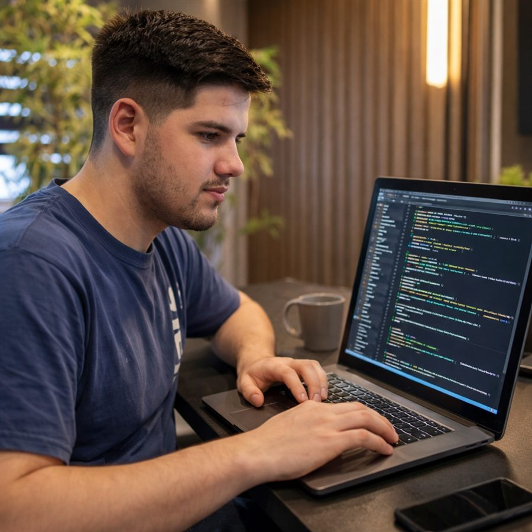

<!doctype html>
<html lang="pt-BR">
<head>
  <meta charset="utf-8">
  <!-- Ferramenta: gera imagens do site (não é linkada em lugar nenhum).
       ?mode=og                         → prévia de compartilhamento 1200×630
       ?mode=diagram&slug=X&lang=pt|en  → infográfico de um projeto (usado pelo JOPES.EXE)
       Veja tools/gerar-imagens.ps1. -->
  <title>render</title>
  <meta name="robots" content="noindex">
  <link href="https://fonts.googleapis.com/css2?family=UnifrakturMaguntia&family=Newsreader:ital,opsz,wght@0,6..72,400;0,6..72,700;0,6..72,800;1,6..72,400;1,6..72,500&family=IBM+Plex+Mono:wght@400;500;600&display=swap" rel="stylesheet">
  <link rel="stylesheet" href="../style.css">
  <style>
    html, body { margin: 0; overflow: hidden; }
    body::before { opacity: .3; }
    #stage { position: relative; z-index: 1; }
    .dg-stage { width: 1280px; height: 800px; display: grid; place-items: center; background: var(--paper-2); }
    .dg-stage .print-img.diagram { width: 1280px; height: 800px; aspect-ratio: auto !important; }
    .dg-stage .dg-label { font-size: 17px; }

    .og { width: 1200px; height: 630px; box-sizing: border-box; padding: 34px 48px 0; display: grid; grid-template-rows: auto auto 1fr auto; background: var(--paper); }
    .og-util { display: flex; justify-content: space-between; font-family: var(--mono); font-size: 15px; color: var(--ink-2); border-bottom: 1px solid var(--ink); padding-bottom: 10px; }
    .og-mast { text-align: center; padding: 14px 0 10px; border-bottom: 4px double var(--ink); }
    .og-mast b { font-family: var(--black); font-weight: 400; font-size: 118px; line-height: .95; display: block; }
    .og-mast small { display: block; font-family: var(--mono); font-size: 14px; letter-spacing: .16em; text-transform: uppercase; margin-top: 6px; }
    .og-body { display: grid; grid-template-columns: 1fr 300px; gap: 36px; align-items: center; padding: 22px 0; }
    .og-kicker { font-family: var(--mono); font-size: 16px; font-weight: 600; letter-spacing: .14em; text-transform: uppercase; color: var(--red); }
    .og-head { font-family: var(--serif); font-weight: 800; font-size: 60px; line-height: 1.02; letter-spacing: -.02em; margin: 8px 0 12px; }
    .og-deck { font-family: var(--serif); font-style: italic; font-size: 25px; color: var(--ink-2); line-height: 1.3; }
    .og-photo { height: 250px; border: 2px solid var(--ink); }
    .og-photo img { object-position: 30% 20%; }
    .og-foot { margin: 0 -48px; background: var(--ink); color: var(--paper); font-family: var(--mono); font-size: 16px; letter-spacing: .1em; text-transform: uppercase; padding: 13px 48px; display: flex; justify-content: space-between; }
    .og-foot b { color: #f3a08e; font-weight: 600; }
  </style>
</head>
<body>
  <div id="stage"></div>
  <script src="../i18n.js"></script>
  <script src="../diagram.js"></script>
  <script>
    const q = new URLSearchParams(location.search);
    const LANG = q.get('lang') === 'en' ? 'en' : 'pt';
    const esc = (s = '') => String(s).replace(/[&<>"']/g, (c) => ({ '&': '&amp;', '<': '&lt;', '>': '&gt;', '"': '&quot;', "'": '&#39;' }[c]));
    const L = (v) => (v && typeof v === 'object' && !Array.isArray(v) && ('pt' in v || 'en' in v) ? (v[LANG] ?? v.pt) : v);
    const t = (k) => window.COPY[LANG][k] ?? window.COPY.pt[k] ?? k;
    const stage = document.getElementById('stage');
    const done = () => document.fonts.ready.then(() => { document.title = 'pronto'; });

    if (q.get('mode') === 'diagram') {
      fetch('../data/profissionais.json').then((r) => r.json()).then((list) => {
        const p = list.find((x) => x.slug === q.get('slug'));
        stage.className = 'dg-stage';
        stage.innerHTML = window.renderDiagram({ ...p, title: L(p.title) }, { L, t, esc });
        done();
      });
    } else {
      const n = Math.floor((Date.now() - new Date(2023, 7, 1)) / 864e5).toLocaleString('pt-BR');
      stage.innerHTML = `
        <div class="og">
          <div class="og-util"><span>Blumenau, SC · Edição nº ${n}</span><span>Em alta: JOPES.EXE, o currículo que virou jogo</span></div>
          <div class="og-mast"><b>O Jopes</b><small>Diário de um engenheiro backend · Fundado em agosto de 2023</small></div>
          <div class="og-body">
            <div>
              <div class="og-kicker">Portfólio · Edição de hoje</div>
              <div class="og-head">João Paulo Oliveira, engenheiro backend</div>
              <div class="og-deck">Java, Spring Boot, AWS e mensageria. Projetos, carreira, cartas de colegas e uma palavra cruzada.</div>
            </div>
            <div class="print-img og-photo"></div>
          </div>
          <div class="og-foot"><span>Leia a edição completa</span><b>PT · EN</b></div>
        </div>`;
      document.querySelector('.og-photo img').decode().then(done, done);
    }
  </script>
</body>
</html>
